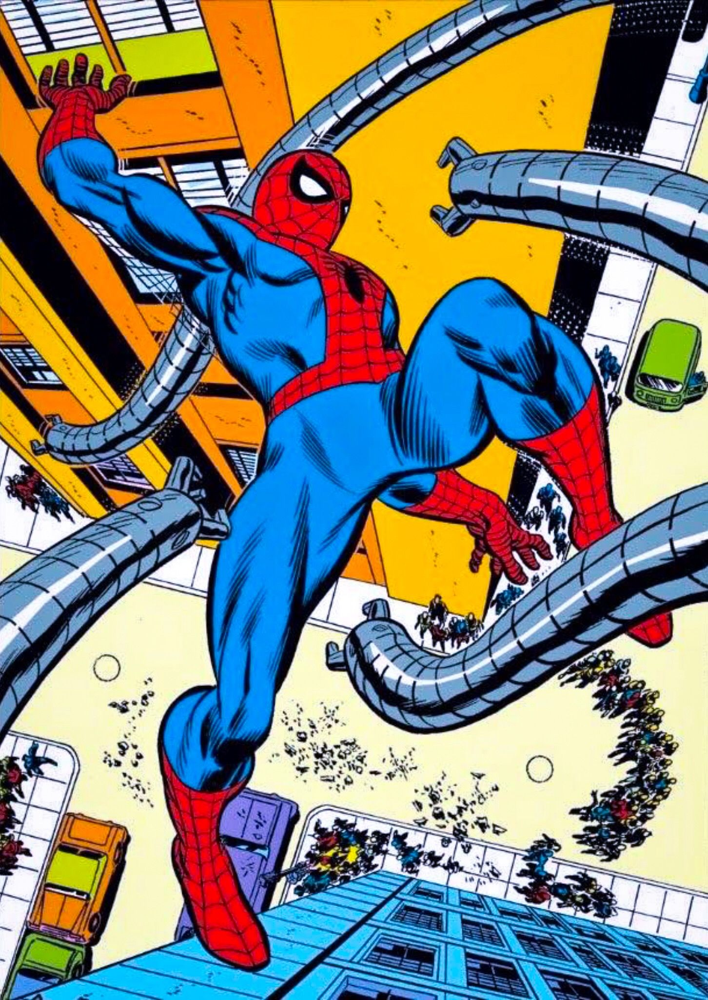
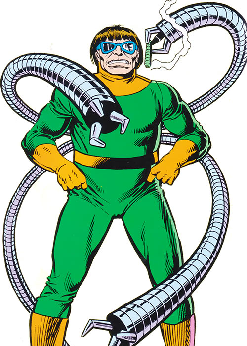
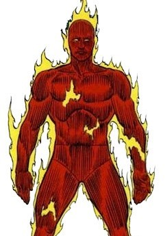

About The Amazing Spider-Man Issue #3
The Amazing Spider-Man Issue #3, published in 1963, introduces one of Spider-Man’s most iconic villains: Doctor Octopus. This issue showcases Spider-Man’s determination to overcome great challenges, highlighting the complexity of both his heroism and personal struggles.
Featured Characters

Spider-Man (Peter Parker): The web-slinging superhero and main protagonist.

Doctor Octopus: A brilliant but arrogant scientist and villain with mechanical tentacles.

Human Torch: A fiery hero and member of the Fantastic Four, known for his bold personality.
Key Details
- Release Date: July 1963
- Writer: Stan Lee
- Artist: Steve Ditko
- Villain Introduced: Doctor Octopus
Legacy and Impact
Doctor Octopus became one of Spider-Man’s greatest foes, appearing in numerous iconic storylines. This issue set the foundation for Spider-Man as a complex and relatable superhero, balancing humor, heroism, and human vulnerability.